另一世的敌人 · 定稿确认（11-08）
新增 23 位：第 1–7 关各一位另一世守关者，第 1–8 关各一位另一世精英和普通敌人；第 8 关最终 BOSS 不变。
时间线：同一关的三个敌人（第 1 战普通、第 2 战精英、第 3 战守关者）必须属于同一条时间线：本世全是原来的三位，另一世全是新的三位，不混搭，这样一关里的世界读起来是连贯的。第 8 关的守关者（万王之影 → 初代魔法王）两条时间线都一样，只换精英和普通。 某一关的守关者第一次被击败之前，这一关固定是本世；之后每一局进入这一关时随机一次，整关三战一起换。
已定：守关规则仍从致命魔法池随机，不绑定角色。新角色的台词规则和老角色相同：每句配一句 alt，标签用 again / beaten / late。11-08 定稿（用户）：奥斯温用第四轮（第二轮 s6 + 新轮廓光）；卢西安、塞德里克用第三轮新版；第十七位王用 s4（脸化进雾里）；其余守关者用现版 + 赛琳娜式轮廓光；精英、普通用现选。第四轮的普通敌人哀伤重出版被否决——负石脚夫、系缎少女、拨钟学徒、铆盾女工保留明亮的原版（「小怪有明亮的能接受」）。motive 之后按 research/content/narrative_core.md 的新叙事框架重写。定稿图在 art-source/1108/final/（boss/、foe2/，按安装名），还没装进 assets/。
完整人设、残卷、台词、候选与历次修改见审阅页（历史）。确认后再装进游戏（立绘已按安装名备好，配音、典籍、随机接入另做）。
第 1 关 · 魔蚀荒原
第 1 战 · 普通
荒原上怕晶的学徒。
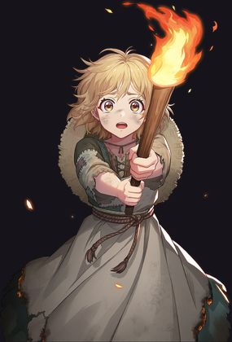
跟着玛尔塔烧田的割麦少女，看见什么是黑的就烧。
第 2 战 · 精英
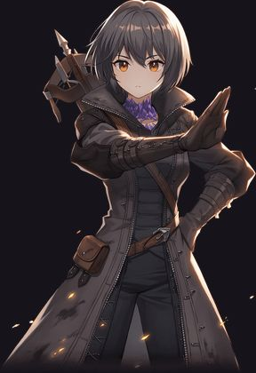
曾与格雷戈尔同行的猎巫人。
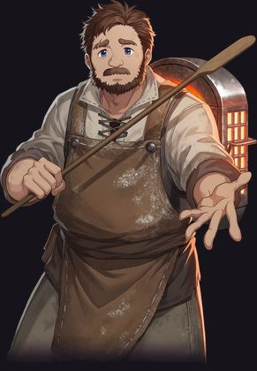
格雷戈尔的炉工。背着炉里的火种，替玛尔塔点火，也替她数烧掉的田。
第 3 战 · 守关者
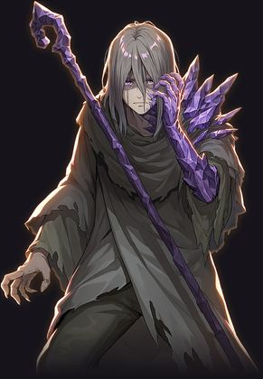
荒原边上的术士，曾与猎巫人同行。魔蚀第一次落下时，是他先伸出了手。
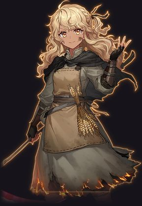
种麦子的人。格雷戈尔没能伸手的那一世，她烧掉麦田，把魔蚀赶到荒原尽头。
第 2 关 · 失落魔都
第 1 战 · 普通
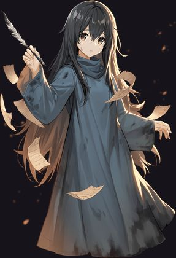
溺城里抄名字的抄写员。
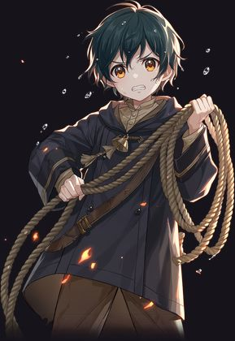
拉大钟铃绳的孩子，绳子越泡越沉，他们越拉越小。
第 2 战 · 精英
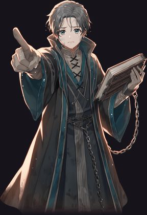
失落魔都的法务官，至今在水下按旧法开庭。
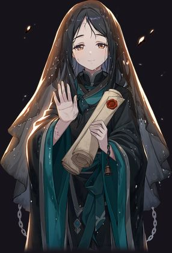
法务官的副手。铃响一声，签一份赦令：赦你不必再往上走。
第 3 战 · 守关者
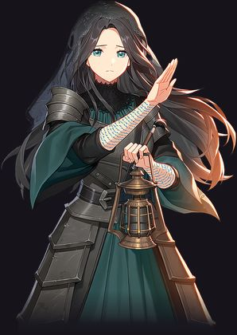
魔都书库的末任书记。城沉的那一夜，她没有逃，提着书库最后一盏铜灯，把笔蘸进了水里。
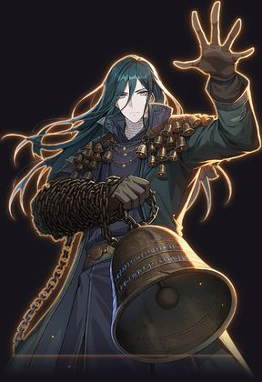
维斯的侍铃人。书记沉下去的那一世，他每个整点敲一下铃，叫一个名字。
第 3 关 · 登天古道
第 1 战 · 普通
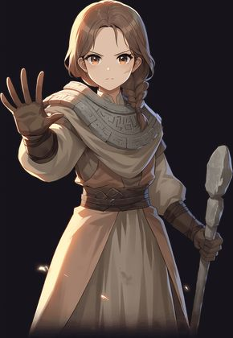
要你读完碑文才许登阶的守卫。
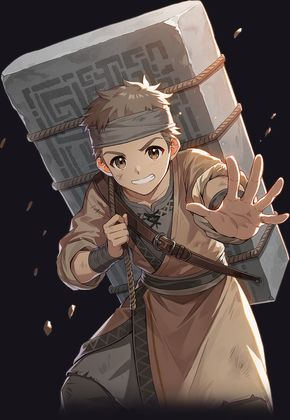
背新石头上山补台阶的脚夫。
第 2 战 · 精英
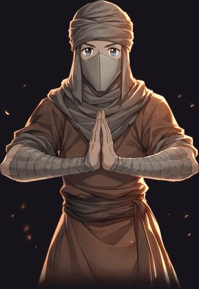
古道上的苦行者，守誓人的晚辈。
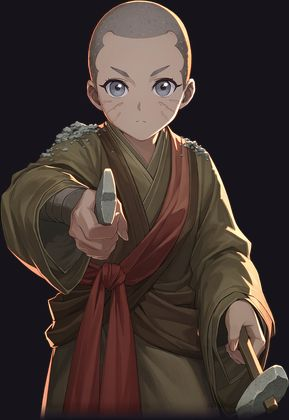
不封五感的苦行者。睁着眼，把每个上山的人的脸刻进石阶。
第 3 战 · 守关者
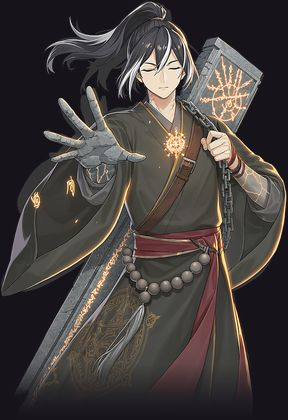
古道守誓人的最后一个。立誓为登天者守门，直到最后一位王走过；守门时闭着眼，不看来人的脸。
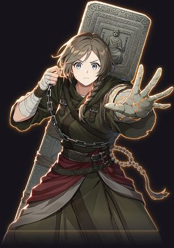
巴尔德温坐下的那一世，她把他刻成碑背在身上，睁着眼守门。
第 4 关 · 云间断桥
第 1 战 · 普通
吹哨叫人掉下去的风哨术士。
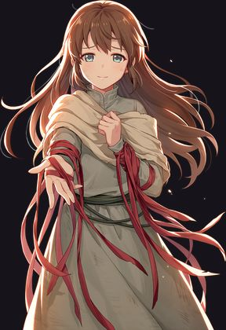
每年上桥，替每个掉下去的团员系一条红缎带的姑娘。
第 2 战 · 精英
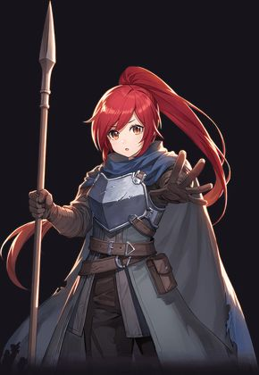
断桥守卫团的副团长。
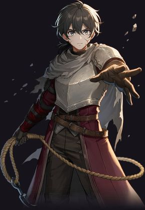
只钩住了团长的钩绳手。每天往云下扔一次钩绳，钩上来的只有风。
第 3 战 · 守关者
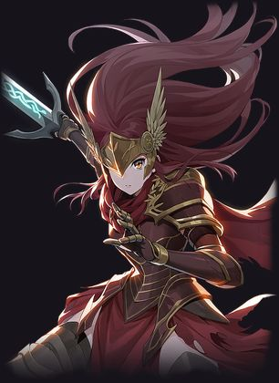
断桥守卫团最年轻的团员。入团那年，她只够得着团旗的下摆。
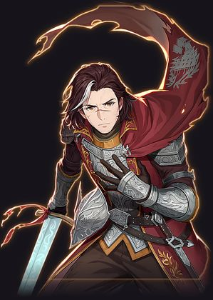
断桥团长。他往下看了一眼，全团就跳了下去——挂在钩绳上的，是他。
第 5 关 · 浮空遗城
第 1 战 · 普通
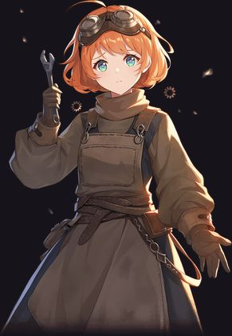
怕齿轮一停城就掉的学徒。
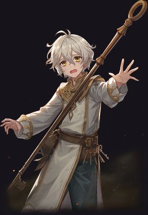
天黑前爬遍全城、把指针拨回清晨的小学徒。
第 2 战 · 精英
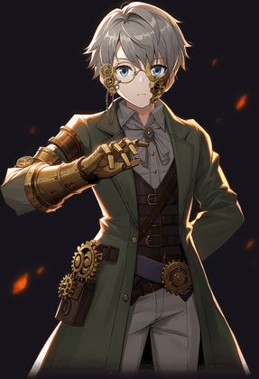
浮空遗城的机巧师。
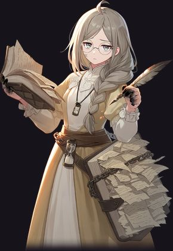
城里唯一记得每个「今天」的人，写满了十万页同样开头的日记。
第 3 战 · 守关者
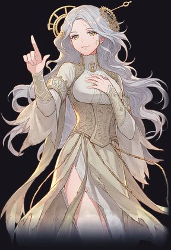
浮空遗城的宫廷时间魔导师。莉瑟女王走进光里之后，律令念出的下一个名字，是她。
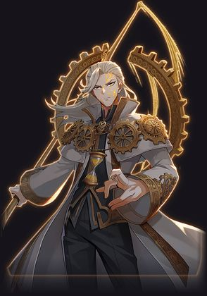
克洛伊的学徒。她跟着光走了；他每晚把坠落的城拨回她还在的那一天。
第 6 关 · 天穹壁垒
第 1 战 · 普通
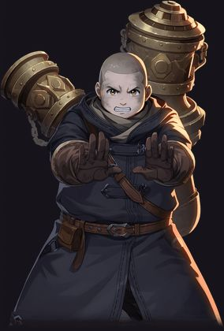
炮口朝天的壁垒炮术士。
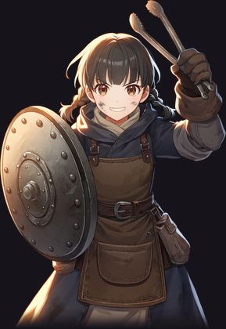
把炮熔成盾、一面面铆好送上墙头的女工。
第 2 战 · 精英
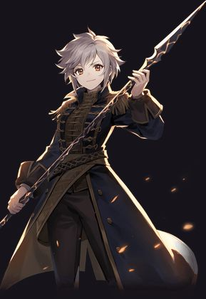
天穹壁垒第三队最后一人。
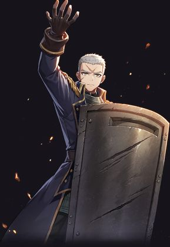
第三队把雷枪换成了盾，一面接一面拼在墙头，替伊芙琳分去天的重量。
第 3 战 · 守关者
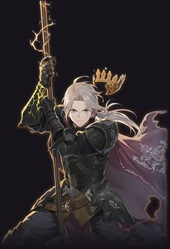
卡斯坦家世代镇守天穹的裂缝。家训只有一句：天塌下来，卡斯坦先顶。
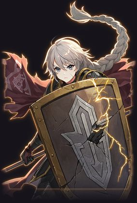
雷恩的妹妹。哥哥下山找人的那一世，她举起铜塔盾，替王国顶着天。
第 7 关 · 天空王城
第 1 战 · 普通
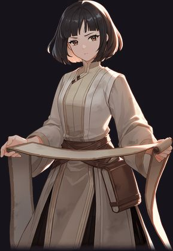
查名册的宫廷书记官。
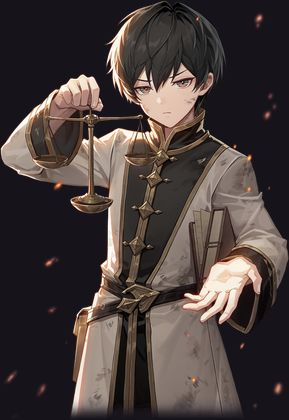
城门下摆着一排小秤，称行李、称名字的秤吏。
第 2 战 · 精英
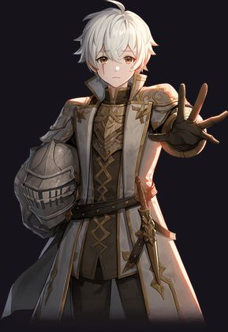
末代王的近卫。
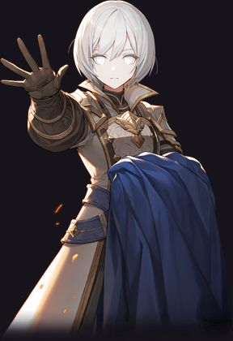
推开了王座间那扇门的近卫。她看见了光，从此只看得见一片白。
第 3 战 · 守关者
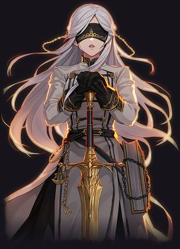
王城律令的执掌者。她的职责只有一条：把被选中的新王，送进那道光里。
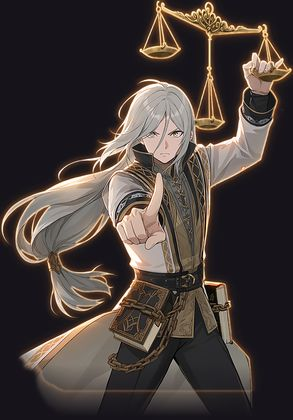
赛琳娜的兄长。她看了第二眼之后，他睁着眼念律令，把每个登天者放上秤。
第 8 关 · 原初源泉
第 1 战 · 普通
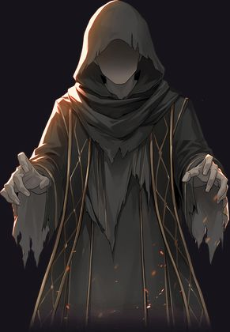
只会念「王」的残响。
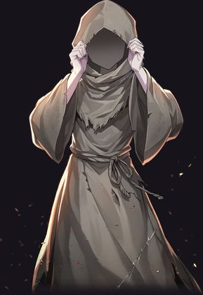
忘了「王」，只会问「是谁」的残响。
第 2 战 · 精英
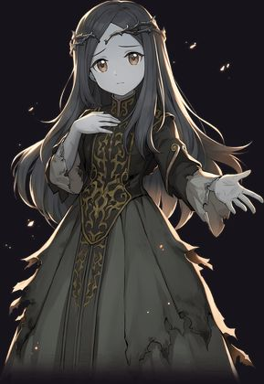
从万王之影里走出来的一位。
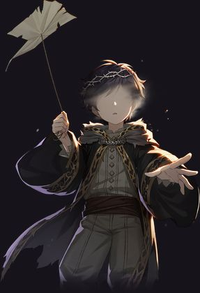
放风筝时被点到名的少年王。源泉记住了他的名字，却忘了他的脸。
第 3 战 · 守关者
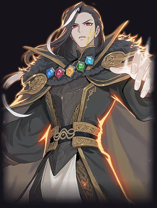
两条时间线相同。